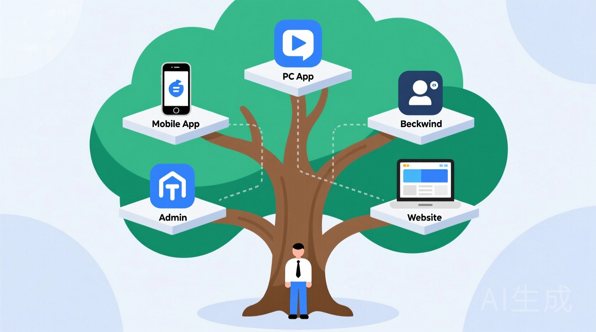

一、转身：从传统技术栈到AI协作者
我的技术生涯不算短：通信行业十年嵌入式，互联网五年后台，后来又横跨To C与To B业务，做过市场、销售、运营。具体的技术细节虽已生疏，但技术的骨架与灵魂——架构思维与业务洞察，却沉淀了下来。用老领导们的话说，我是个 "懂业务的技术架构师"。
在DeepSeek出现之前，我和许多人一样，认为大模型只是个超级知识库。但它的出现，让我第一次真切地感受到：通用智能的苗头出现了。它不仅在训练过的领域逻辑缜密，更在未知领域展现了惊人的泛化能力。
"大力出奇迹"的哲学，正在让神经网络发生质变。这个冲击，让我在去年7月毅然做出了选择：离职，并邀请 Cursor 作为我的全职"开发同事"，开启了一场前所未有的创业实验。

二、起点：一个"不一样"的相册梦想
我选择从"芯图相册"起步，原因有二：
1. 一是想亲手触摸这场技术革命，自学神经网络
2. 二是我自己就是相册的"重度受害者"
你是否也经历过？
- 急需电子证件照，它明明就在相册里，却如大海捞针。
- 工作截图堆积成山，删不完理还乱，混乱不堪。
我想要的，是一个真正"懂我"的相册。于是，"让照片的智能分类成为第一个不一样"，成了我交给Cursor的第一个项目需求。
三、鏖战：客厅里的百日攻坚
接下来的三个月，我的客厅成了主战场。我如定海神针般坐镇于此：
- 早晨7:30，准时开工。
- 晚上10:00，方才收工。
累了，就与我养的鱼、龟、花花草草对话片刻，让它们为我焦躁的情绪"降降温"。
这段完全沉浸的时光，让我得以深入观察这位AI同事的工作模式。

四、战果：一人三月，全平台交付
在Cursor的辅助下，我这个没写一行代码的人，交出了这份成绩单：
技术预研：
- 身份证识别：训练YOLOv8s模型，用Stable Diffusion生成虚拟数据集解决数据瓶颈。
- 场景识别：基于ImageNet-1k数据集训练MobileNetV3模型。
产品开发（全栈交付）：
1. 移动端：芯图相册安卓版（核心功能：智能分类、照片创玩）。
2. PC端：功能完整的Windows桌面版。
3. 后端与服务：基于FastAPI的后端服务、管理后台、官网。
技术栈涉及：React Native, Node.js, Java, Python，....。而所有这些，对我这个C/C++老兵来说，都是第一次接触。
五、磨合：AI同事的四个"臭毛病"
Cursor的效率惊为天人，分分钟完成过去需月余的工作量。但当代码规模扩大，真正的挑战才浮现。我总结了这位天才同事的几个典型"毛病"：
1. 程咬金三板斧：针对同一问题，若尝试三种方案未果，它便开始"摆烂"，推荐绕过问题的取巧方案，而非根治问题。
2. 毅力平平，来回拉磨：在新方案引入新问题后，它缺乏持续深入的洞察力，往往会无奈地推荐改回原方案，陷入循环。
3. 简单问题复杂化：钟情于用"牛刀杀鸡"，喜欢引入复杂的技术实践来解决简单的业务问题。
4. 凡事留一线：代码中存在大量"降级处理"，甚至在接口字段提取时，也喜欢尝试不同标签，显得犹豫不决。
核心结论是：当项目复杂度提升，你绝不能当"甩手掌柜"。仅靠测试驱动远远不够，必须用更高级的架构思维对其进行引导与约束。

结语：从"指哪打哪"到"心领神会"
这四个月，是一场与未来对话的深度实验。我证明了，一个资深技术人的架构思维与业务理解，加上一个强大的AI编码伙伴，可以爆发出何等惊人的生产力。
但如何让AI真正理解你的"意图"而不仅仅是"指令"？如何将你的技术认知转化为它能严格执行的"架构约束"？
在下一篇文章中，我将分享我的核心心法：《如何让大模型指哪打哪：架构师的提示词工程与思维传导》。我们将一同探索，如何成为AI时代的真正"指挥家"。